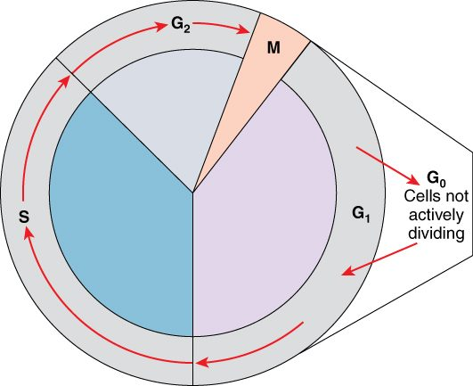
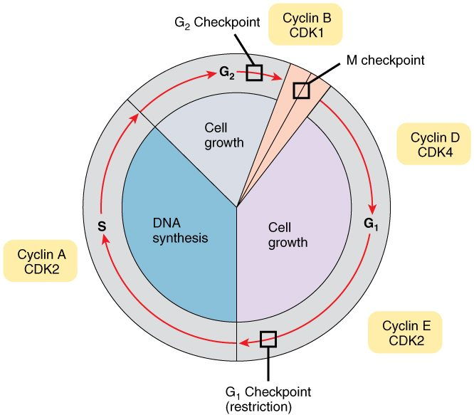
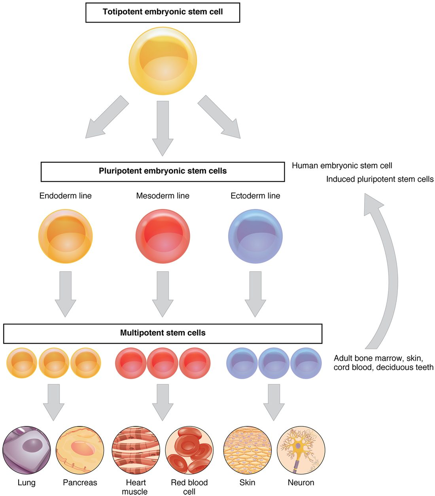

The lining of your intestine is replaced every few days. Your body makes about two million new red blood cells every second. Yet many of your cells almost never divide. This page explains the cell cycle and the phases of mitosis, how cells decide whether to divide, how unspecialized stem cells give rise to specialized cells, how cells are removed on purpose, and what goes wrong in cancer.
The cell cycle: a cell's life in phases
Picture a cell deep in the lining of your intestine. It grows, copies its DNA, divides in two, and the two new cells start over. Grown in a dish, a fast-dividing human cell like this takes about 24 hours to go around once.
The cell cycle is the ordered series of events from the moment a cell forms to the moment it divides into two. It has two main parts (Figure 1).
Interphase (inter- = between) is the long stretch between divisions, about 23 of those 24 hours. The cell does its normal work and prepares to divide. Interphase has three phases:
- G1 phase (G = gap): the cell grows, makes proteins and organelles, and carries out its usual work. G1 is the most variable phase; it can last hours or days.
- S phase (S = synthesis): the cell replicates its DNA. Each chromosome becomes two sister chromatids joined at the centromere. The centrosome is also copied.
- G2 phase: the cell grows a little more, makes the proteins it needs for division, and checks its copied DNA.
The mitotic phase (M phase) is the division itself, about an hour. It has two overlapping parts: mitosis divides the nucleus, and cytokinesis divides the cytoplasm.
Many cells leave the cycle. G0 phase is a resting state, entered from G1, in which the cell carries out its normal work but does not prepare to divide. Some cells stay in G0 for life. Others can return: your liver cells sit in G0 for years, but if part of the liver is removed, many re-enter G1 and divide until the lost mass is restored.

Control of the cell cycle: cyclins and checkpoints
A car needs an accelerator to go and brakes to stop. The cell cycle has both.
The accelerator is a family of enzymes called cyclin-dependent kinases (CDKs). A kinase (kin- = to move, -ase = enzyme) moves a phosphate group from ATP onto a target protein. That phosphorylation switches the target on or off. A CDK is present all through the cycle but inactive on its own. It works only when bound to a cyclin, a protein whose level rises and falls as the cycle goes round (hence the name).
- The cell makes a particular cyclin, and its level rises.
- The cyclin binds its CDK and activates it.
- The cyclin–CDK pair phosphorylates proteins that push the cell into the next phase.
- The cell then destroys that cyclin. The CDK falls silent, and the next cyclin takes over.
The brakes are checkpoints: points where the cell pauses until certain conditions are met (Figure 2).
- G1 checkpoint. Is the cell big enough? Are there enough nutrients? Have neighboring cells sent signals to divide? Is the DNA undamaged? Once a cell passes this point, it is committed to finishing the cycle.
- G2 checkpoint. Has all the DNA been replicated, and replicated correctly?
- Spindle checkpoint (during mitosis). Is every chromosome attached to the spindle from both sides? Until it is, the sister chromatids stay together.
A protein called p53 links DNA damage to these brakes. When DNA is damaged, p53 builds up. It turns on genes that halt the cycle, giving repair enzymes time to work. If the damage cannot be fixed, p53 turns on the cell's self-destruct program, described below.
Two groups of genes set the balance, and mutations in them drive cancer.
| Oncogene | Tumor suppressor gene | |
|---|---|---|
| Normal job of the gene | Codes for a protein that promotes division (an accelerator) | Codes for a protein that halts division, repairs DNA or triggers self-destruction (a brake) |
| What the mutation does | Makes the protein overactive or overabundant: a stuck accelerator | Removes the protein's function: failed brakes |
| Copies that must be hit | Usually one of the two | Usually both |
| Examples | RAS, HER2 | TP53 (codes for p53), RB1, BRCA1 |
An oncogene (onco- = tumor) is the mutated, overactive form of a normal division-promoting gene. A tumor suppressor gene is a gene whose normal product restrains division. One working copy of a tumor suppressor gene usually gives enough brake, which is why both copies must usually be lost.

Mitosis: dividing the nucleus
Mitosis (mit- = thread, -osis = process: named for the threadlike chromosomes) divides one nucleus into two nuclei with identical sets of chromosomes. It is how somatic cells (somat- = body) divide. Somatic cells are all your body cells except the line of cells that becomes eggs and sperm. Eggs and sperm come from a different kind of division, covered in the reproductive chapter.
Mitosis runs as one continuous process, but it is described in four phases. Follow them in Figure 3.
- Prophase (pro- = before). Chromatin condenses into compact chromosomes, each made of two sister chromatids. The nucleolus disappears. The two centrosomes move toward opposite ends of the cell, growing microtubules as they go. These microtubules form the mitotic spindle. Late in prophase, the nuclear envelope breaks apart. Spindle microtubules then attach to the kinetochores (kineto- = moving, -chore = place): protein structures on each centromere, one facing each end of the cell.
- Metaphase (meta- = middle). The spindle pulls from both sides until the chromosomes line up single file across the middle of the cell. This imaginary plane is the metaphase plate. The spindle checkpoint acts here.
- Anaphase (ana- = apart). The proteins holding each pair of sister chromatids together are cut. The kinetochore microtubules shorten and pull the chromatids to opposite ends of the cell. Each separated chromatid now counts as a chromosome in its own right.
- Telophase (telo- = end). A set of chromosomes arrives at each end. A nuclear envelope forms around each set, the chromosomes loosen back into chromatin, nucleoli reappear, and the spindle comes apart.
Worked example: counting chromosomes and DNA through the cycle. Call the DNA in one of your body cells in G1 "1 unit". Track it through one cycle.
- G1: 46 chromosomes, each one DNA molecule. DNA = 1 unit. Chromatids: none, because nothing has been copied.
- S phase: every DNA molecule is replicated. Each chromosome is now two sister chromatids.
- G2, prophase and metaphase: 46 chromosomes, 92 chromatids. DNA = 2 units.
- Anaphase: the sister chromatids separate, and each becomes a chromosome. The cell briefly holds 92 chromosomes, 46 moving to each end. DNA = still 2 units.
- After cytokinesis: each of the two new cells has 46 chromosomes and 1 unit of DNA, the same as the starting cell.
Cytokinesis: dividing the cytoplasm
Cytokinesis (cyto- = cell, kinesis = movement) splits the cytoplasm and the rest of the cell in two. It usually begins in late anaphase and finishes after telophase.
A ring of actin and myosin filaments forms just under the plasma membrane, around the middle of the cell. Myosin pulls the actin filaments past each other, and the ring tightens like a drawstring. The membrane dips inward, forming a groove called the cleavage furrow. The furrow deepens until the cell pinches into two daughter cells, each with a nucleus and about half the organelles.
Mitosis can run without cytokinesis. That leaves one cell with two nuclei, which is normal for some of your liver cells.
Stem cells: the source of new cells
Back to the intestinal lining. The cells at its surface live only a few days. They are replaced from a small pool of cells at the bottom of tiny pits in the lining. Those cells divide throughout your life, and they never run out.
A stem cell is an unspecialized cell that can do two things:
- renew itself: divide to make more stem cells, and
- give rise to specialized cells.
Often one division does both. One daughter stays a stem cell, and the other goes on to specialize. That keeps the pool steady while it supplies new cells.
Stem cell potency: how many cell types a stem cell can make
Stem cells differ in how many kinds of cell their descendants can become. This range is their potency (potent- = powerful). Figure 3 shows the ladder.
- Totipotent (toti- = whole): can form every cell of the body plus the supporting tissues of pregnancy. Only the fertilized egg and the cells of its first few divisions are totipotent.
- Pluripotent (pluri- = many): can form every cell type of the body, but not the supporting tissues of pregnancy. Cells taken from a very early human embryo are pluripotent. Adult cells can also be made pluripotent in the lab by switching on a handful of transcription factors. These induced pluripotent stem cells show that specialization is set by which genes are expressed, not by genes being lost.
- Multipotent (multi- = many): can form several related cell types within one family. The stem cells that make all your blood cells are multipotent: they produce red blood cells, every kind of white blood cell, and platelets.
- Oligopotent (oligo- = few): can form just a few cell types, such as a cell that can make only a few kinds of white blood cell.
- Unipotent (uni- = one): can form only one cell type, but can still renew itself. The stem cells in the testis that produce only sperm are an example.
As you move down the ladder, cells lose options. Most stem cells in your adult body are multipotent or less.

Cell differentiation: becoming specialized
A stem cell in your intestinal lining can give rise to an absorptive cell covered in microvilli or to a cell that secretes digestive enzymes. Both carry the same genome. What makes them different?
Cell differentiation (differ- = to carry apart) is the process by which a cell becomes specialized in structure and function. It works through gene expression:
- Signals from neighboring cells, and the cell's own history, set which transcription factors it holds.
- Those transcription factors switch on one set of genes and keep others off.
- The proteins made from the active genes build the cell's special structures, such as microvilli, and carry out its special jobs, such as secreting an enzyme.
- Many of those transcription factors also keep their own genes on, so the cell stays specialized after the original signal is gone.
Differentiation is usually stable, and fully differentiated cells often stop dividing and enter G0. It is not usually a loss of DNA. The same genome stays in the nucleus, with different genes switched on.
Apoptosis: cell death on purpose
Your hands begin as paddles. The fingers separate because the cells between them die on schedule. In an adult, around 50 to 70 billion cells die this way every day, balancing the new cells made by division.
Apoptosis (apo- = away, -ptosis = falling, as leaves fall from a tree), also called programmed cell death, is an orderly self-destruction carried out by the cell's own enzymes.
- A trigger arrives. It can come from inside, such as DNA damage too great to repair (sensed by p53), or from outside, such as a death signal from another cell, or the loss of the survival signals a cell normally receives from its neighbors.
- Enzymes are switched on. The trigger activates a set of protein-cutting enzymes called caspases. Each one activates the next, so the response grows quickly.
- The cell takes itself apart. The caspases cut the cytoskeleton and other key proteins. Enzymes chop the DNA into fragments. The cell shrinks and breaks into small, membrane-wrapped pieces.
- Neighbors clean up. The pieces display markers on their surface that neighboring cells recognize, and those cells engulf them by phagocytosis.
Because the contents stay wrapped in membrane, nothing spills into the surrounding tissue, and the tissue is not damaged. A cell killed by injury is different: it swells and bursts, and its spilled contents harm the tissue around it.
Cancer: when control fails
Cancer is a disease of cells that divide without control. It starts in one cell and builds step by step.
- A cell gains a mutation, perhaps in an oncogene, that pushes it to divide a little more than it should.
- Its descendants inherit the mutation. As they divide, some gain more mutations: a tumor suppressor gene is lost, a checkpoint fails, the route to apoptosis is blocked.
- Each new mutation that lets a cell outgrow its neighbors spreads through that cell's descendants. The cells now divide regardless of signals and no longer die when they should.
- The growing mass of abnormal cells is a tumor, also called a neoplasm (neo- = new, -plasm = formed thing).
Most cancers need several mutations, which is one reason cancer becomes more common with age. A benign tumor stays in one place. A malignant tumor, which is what cancer means, invades the tissue around it. Its cells can break away, travel through the blood or the lymphatic system, and start new tumors elsewhere. This spread is metastasis (meta- = change, -stasis = placement), and it causes most cancer deaths.